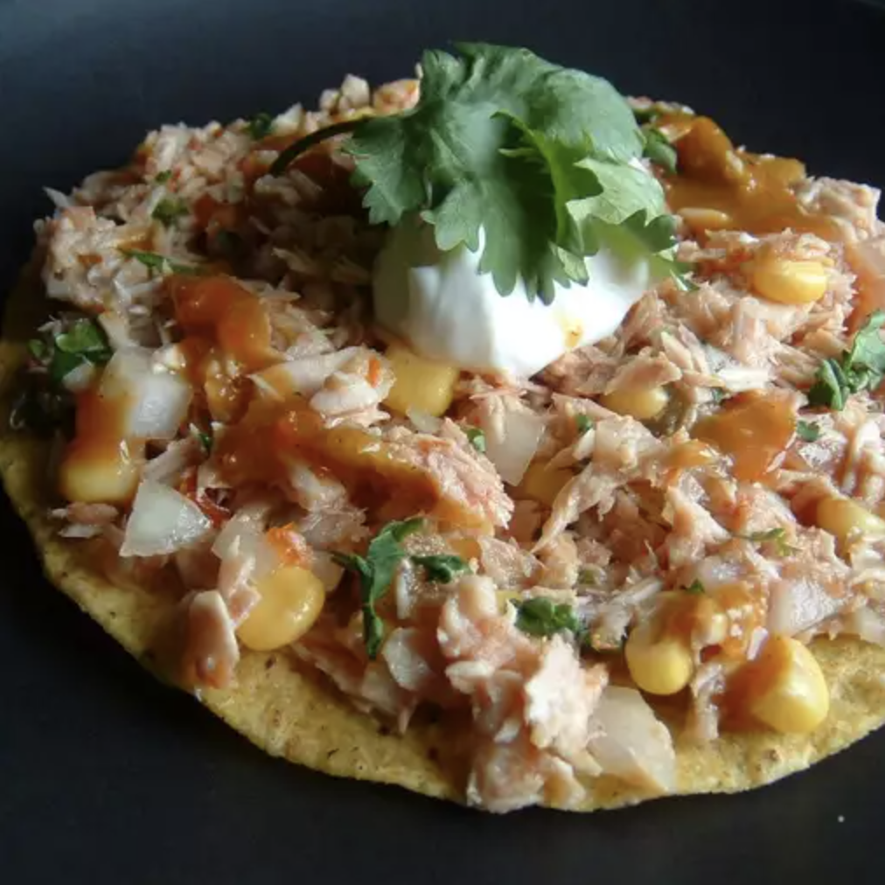

Tuna Lime Tostadas

Ingredients:
- 15 ounces of canned white tuna (drained)
- 5 ounces of canned sweet corn (drained)
- Half an onion, finely chopped
- 1 bunch of cilantro, finely chopped
- 2 tbsp salsa
- 1 lime, juiced
- Hot sauce (optional)
- Salt and pepper to taste
- Sour cream
- 8 tostada shells
Steps:
- Place tuna in a bowl and flake with fork
- Mix tuna with corn, onion, cilantro, salsa, lime juice, hot sauce, salt, and pepper
- Spoon filling onto tostada shells
- Top tostadas with sour cream and hot sauce (optional)